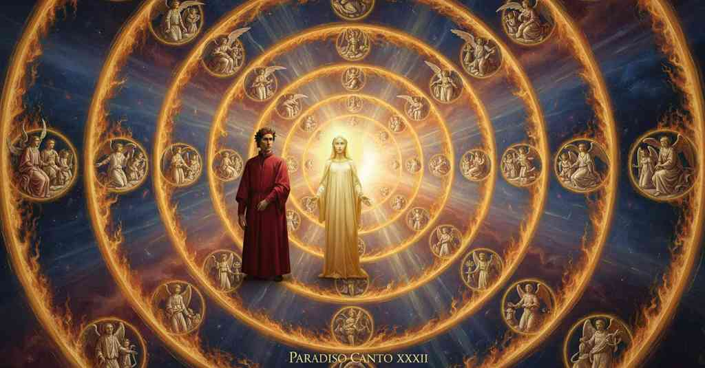

Paradiso — Canto 28

Dante sees God as a point of light surrounded by nine angelic circles, and Beatrice explains their paradoxical motion, identifies their orders, and links them to the physical heavens. 語り手は神を囲む九つの天使の輪を目撃し、ベアトリーチェはその回転速度と階級の逆説的な秩序を解き明かす。
1
Poscia che ’ncontro a la vita presente
After that she who imparadises my mind
わが知性を天国へと導く御方が、
2
d’i miseri mortali aperse ’l vero
opened the truth about the present life
哀れな死すべき者たちの現在の人生に反する真実を
3
quella che ’mparadisa la mia mente,
of wretched mortals,
明かした後、
4
come in lo specchio fiamma di doppiero
as in a mirror the flame of a torch
鏡の中に蝋燭の炎を見るように、
5
vede colui che se n’alluma retro,
is seen by one who has it lit behind him,
背後からそれに照らされる者が、
6
prima che l’abbia in vista o in pensiero,
before he has it in sight or in thought,
まだそれを見たり考えたりする前に、
7
e sé rivolge per veder se ’l vetro
and he turns around to see if the glass
そして振り返って、鏡が
8
li dice il vero, e vede ch’el s’accorda
tells him the truth, and sees that it accords
真実を語っているか確かめ、それが一致するのを見る、
9
con esso come nota con suo metro;
with it as a note with its meter;
音符がその拍子と合うように。
10
così la mia memoria si ricorda
so my memory recalls
そのように、わが記憶は思い出す、
11
ch’io feci riguardando ne’ belli occhi
that I did, looking into the beautiful eyes
私が美しい瞳を見つめてそうしたことを、
12
onde a pigliarmi fece Amor la corda.
where Love made the cord to capture me.
そこから愛は私を捕らえるための綱を作った。
13
E com’ io mi rivolsi e furon tocchi
And as I turned and my eyes were touched
そして私が振り返り、わが目が触れたとき、
14
li miei da ciò che pare in quel volume,
by that which appears in that volume,
その天球に現れるものに、
15
quandunque nel suo giro ben s’adocchi,
whenever one gazes well upon its revolution,
その回転をよく見つめるときには、
16
un punto vidi che raggiava lume
I saw a point that radiated a light
私は一つの点を見た、それは光を放っていた、
17
acuto sì, che ’l viso ch’elli affoca
so keen, that the eye on which it focuses
あまりに鋭く、それが燃やす視線は
18
chiuder conviensi per lo forte acume;
must close because of the strong keenness;
その強い鋭さゆえに閉じなければならないほどに。
19
e quale stella par quinci più poca,
and what star from here seems smallest
そしてここから最も小さく見える星も、
20
parrebbe luna, locata con esso
would seem a moon, placed with it
月のように見えるだろう、それと共に置かれれば、
21
come stella con stella si collòca.
as a star is placed with a star.
星が星と共に配置されるように。
22
Forse cotanto quanto pare appresso
Perhaps as close as a halo seems
おそらく、光を彩る光輪が
23
alo cigner la luce che ’l dipigne
to gird the light that paints it
それを囲むように見えるのと同じくらい近くに、
24
quando ’l vapor che ’l porta più è spesso,
when the vapor that bears it is most dense,
それを運ぶ水蒸気が最も濃いとき、
25
distante intorno al punto un cerchio d’igne
a circle of fire revolved around the point,
点から離れて、一つの火の輪が
26
si girava sì ratto, ch’avria vinto
so swift, that it would have vanquished
あまりに速く回転していた、それは打ち負かしただろう
27
quel moto che più tosto il mondo cigne;
that motion which most swiftly girds the world;
最も速く世界を巡るあの運動を。
28
e questo era d’un altro circumcinto,
and this was circumcincted by another,
そしてこれは別の輪に囲まれ、
29
e quel dal terzo, e ’l terzo poi dal quarto,
and that by the third, and the third then by the fourth,
それは第三の輪に、第三は次に第四の輪に、
30
dal quinto il quarto, e poi dal sesto il quinto.
the fourth by the fifth, and then the fifth by the sixth.
第五の輪に第四が、そして第六の輪に第五が。
31
Sopra seguiva il settimo sì sparto
Above followed the seventh so spread out
その上には第七の輪が続いていた、あまりに広がり
32
già di larghezza, che ’l messo di Iuno
already in breadth, that Juno’s messenger
すでにその幅は、ユノの使いが
33
intero a contenerlo sarebbe arto.
would be too narrow to contain it whole.
全体を収めるには狭すぎるほどだった。
34
Così l’ottavo e ’l nono; e chiascheduno
So the eighth and ninth; and each one
第八と第九の輪も同様であった。そして各々は
35
più tardo si movea, secondo ch’era
moved more slowly, according to how it was
より遅く動いていた、その番号が
36
in numero distante più da l’uno;
in number more distant from the one;
一から遠く離れているのに応じて。
37
e quello avea la fiamma più sincera
and that one had the most sincere flame
そして、最も純粋な炎を持っていたのは、
38
cui men distava la favilla pura,
which was least distant from the pure spark,
純粋な火花から最も離れていないものであった、
39
credo, però che più di lei s’invera.
I believe, because it partakes more of its truth.
思うに、それゆえにそれから最も真実を得るからである。
40
La donna mia, che mi vedëa in cura
My lady, who saw me in care
私の貴婦人は、私が深く思い悩んで
41
forte sospeso, disse: «Da quel punto
strongly suspended, said: “From that point
途方に暮れているのを見て、言った、「その一点から
42
depende il cielo e tutta la natura.
depend the heavens and all of nature.
天とすべての自然は依存しているのです。
43
Mira quel cerchio che più li è congiunto;
Look at that circle which is most joined to it;
それに最も近く結合している輪を見なさい。
44
e sappi che ’l suo muovere è sì tosto
and know that its motion is so swift
そして知りなさい、その動きがかくも速いのは
45
per l’affocato amore ond’ elli è punto».
for the fiery love by which it is spurred.”
それを駆り立てる燃えるような愛のためであると」。
46
E io a lei: «Se ’l mondo fosse posto
And I to her: “If the world were placed
そして私は彼女に言った、「もし世界が
47
con l’ordine ch’io veggio in quelle rote,
with the order that I see in those wheels,
私がそれらの輪に見る秩序で置かれていたなら、
48
sazio m’avrebbe ciò che m’è proposto;
what has been proposed would have sated me;
私に示されたことで満足したでしょう。
49
ma nel mondo sensibile si puote
but in the sensible world one can see
しかし感覚の世界では見ることができます、
50
veder le volte tanto più divine,
the spheres to be so much more divine,
天球がそれだけ神々しいのは、
51
quant’ elle son dal centro più remote.
the more they are remote from the center.
中心から遠ざかるほどであると。
52
Onde, se ’l mio disir dee aver fine
Wherefore, if my desire is to have its end
それゆえ、もし私の望みが終わりを得るべきなら
53
in questo miro e angelico templo
in this wondrous and angelic temple
この驚くべき天使の神殿において、
54
che solo amore e luce ha per confine,
that has only love and light for its confine,
ただ愛と光のみを境界とする、
55
udir convienmi ancor come l’essemplo
I must yet hear how the model
私はさらに聞かねばなりません、いかにして模範（コピー）と
56
e l’essemplare non vanno d’un modo,
and the copy do not go in the same way,
原型が同じ仕方で進まないのかを、
57
ché io per me indarno a ciò contemplo».
for I by myself contemplate this in vain.”
なぜなら私は独力でそれを観想しても無駄だからです」。
58
«Se li tuoi diti non sono a tal nodo
“If your fingers are not for such a knot
「もしあなたの指がそのような結び目に
59
sufficïenti, non è maraviglia:
sufficient, it is no marvel:
十分でないとしても、驚くにはあたりません。
60
tanto, per non tentare, è fatto sodo!».
so hard, from not being tried, has it been made!”
それほど、試みられないために、固くなっているのです！」。
61
Così la donna mia; poi disse: «Piglia
Thus my lady; then she said: “Take
このように私の貴婦人は言った。それから言った、「取りなさい
62
quel ch’io ti dicerò, se vuo’ saziarti;
what I shall tell you, if you wish to be sated;
私があなたに言うことを、もし満たされたいなら。
63
e intorno da esso t’assottiglia.
and around it make yourself subtle.
そしてそれについてあなたの知性を鋭敏にしなさい。
64
Li cerchi corporai sono ampi e arti
The corporeal circles are ample and constrained
物質的な天球は広く、また狭いのは
65
secondo il più e ’l men de la virtute
according to the more and the less of the virtue
そのすべての部分に広がる徳の
66
che si distende per tutte lor parti.
that is extended through all their parts.
大小によるのです。
67
Maggior bontà vuol far maggior salute;
Greater goodness wills to make greater weal;
より大いなる善は、より大いなる救いをもたらそうとします。
68
maggior salute maggior corpo cape,
greater weal is contained by a greater body,
より大いなる救いは、より大きな体を占めます、
69
s’elli ha le parti igualmente compiute.
if its parts are equally complete.
もしその部分が等しく完成されているならば。
70
Dunque costui che tutto quanto rape
Therefore this one that sweeps all
それゆえ、他の宇宙のすべてを
71
l’altro universo seco, corrisponde
the rest of the universe with it, corresponds
自らと共に引き攫うこの者（原動天）は、対応するのです
72
al cerchio che più ama e che più sape:
to the circle that loves most and knows most:
最も愛し、最も知る輪（熾天使）に。
73
per che, se tu a la virtù circonde
so that, if you apply your measure
それゆえ、もしあなたが徳に対してあなたの尺度を
74
la tua misura, non a la parvenza
to the virtue, not to the appearance
当てはめるなら、円く見える実体の
75
de le sustanze che t’appaion tonde,
of the substances that seem round to you,
外見にではなく、
76
tu vederai mirabil consequenza
you will see a wondrous correspondence
あなたは驚くべき対応関係を見るでしょう、
77
di maggio a più e di minore a meno,
of greater to more and of lesser to less,
大なるものとより多いもの、小なるものとより少ないものの、
78
in ciascun cielo, a süa intelligenza».
in each heaven, to its intelligence.”
各々の天において、その知性に対する」。
79
Come rimane splendido e sereno
As splendid and serene
大気の半球が輝かしく晴れ渡るように、
80
l’emisperio de l’aere, quando soffia
the hemisphere of the air remains, when Boreas blows
北風がその
81
Borea da quella guancia ond’ è più leno,
from that cheek of his where he is gentlest,
最も穏やかな頬から息を吹き、
82
per che si purga e risolve la roffia
so that the murk that troubled it before
それによって以前に空を乱していた塵芥は
83
che pria turbava, sì che ’l ciel ne ride
is purged and cleared away, and so the heavens smile
清められ、溶け去り、
84
con le bellezze d’ogne sua paroffia;
with the beauties of its every parish;
天はそのすべての領域の美しさをもって微笑む。
85
così fec’ïo, poi che mi provide
so did I, after my lady provided
そのように私もなった、我が貴婦人が
86
la donna mia del suo risponder chiaro,
me with her clear answer,
その明晰な答えを私に授けてくださった後、
87
e come stella in cielo il ver si vide.
and like a star in heaven the truth was seen.
そして真理は天の星のように見えた。
88
E poi che le parole sue restaro,
And after her words had ceased,
そして彼女の言葉が終わると、
89
non altrimenti ferro disfavilla
not otherwise does iron shoot out sparks
沸騰する鉄が火花を散らすように、
90
che bolle, come i cerchi sfavillaro.
that is boiling, than did the circles sparkle.
天使の輪は火花を散らした。
91
L’incendio suo seguiva ogne scintilla;
Every single spark followed its own fire;
一つ一つの火花はその燃える炎に従っていた。
92
ed eran tante, che ’l numero loro
and they were so many that their number
そしてその数はあまりに多く、その数は
93
più che ’l doppiar de li scacchi s’inmilla.
more than the doubling of the chess squares thousands.
チェスの盤の倍増よりもさらに千倍にもなった。
94
Io sentiva osannar di coro in coro
I heard Hosanna sung from choir to choir
私は聞いた、歌隊から歌隊へと「オザンナ」と歌うのを、
95
al punto fisso che li tiene a li ubi,
to the fixed Point that holds them to their places,
不動の点に向かって、その点が彼らをその場所に保ち、
96
e terrà sempre, ne’ quai sempre fuoro.
and will hold them always, where they have always been.
そして常に保つであろう、彼らが常にいたその場所に。
97
E quella che vedëa i pensier dubi
And she who saw the doubtful thoughts
そして私の心の中の疑わしい考えを見て取った彼女は、
98
ne la mia mente, disse: «I cerchi primi
within my mind, said:
言った。「最初の輪はあなたに
99
t’hanno mostrato Serafi e Cherubi.
“The first circles have shown you the Seraphim and the Cherubim.
熾天使と智天使を示しました。
100
Così veloci seguono i suoi vimi,
So swiftly do they follow their own bonds,
かくも速く彼らはその絆に従うのは、
101
per somigliarsi al punto quanto ponno;
to be as like the Point as they are able;
できる限りその点に似るためです。
102
e posson quanto a veder son soblimi.
and they are able in so far as they are sublime in vision.
そして彼らが見ることに優れている分だけ、それが可能なのです。
103
Quelli altri amori che ’ntorno li vonno,
Those other loves that go around them,
それらの周りを回る他の愛は、
104
si chiaman Troni del divino aspetto,
are called the Thrones of the divine aspect,
神の御姿の座天使と呼ばれます。
105
per che ’l primo ternaro terminonno;
because they terminate the first triad;
それによって最初の三つ組は終わりを告げました。
106
e dei saper che tutti hanno diletto
and you should know that all of them have delight
そしてあなたは知るべきです、すべての者が、その視線が
107
quanto la sua veduta si profonda
in proportion as their vision penetrates
すべての知性が静まる真理の中へと深く分け入る分だけ、
108
nel vero in che si queta ogne intelletto.
the truth in which every intellect finds its peace.
喜びを持つということを。
109
Quinci si può veder come si fonda
From this you can see how
ここから見ることができます、いかにして至福の本質が
110
l’esser beato ne l’atto che vede,
blessedness is founded on the act that sees,
観るという働きに根ざしているか、
111
non in quel ch’ama, che poscia seconda;
not on that which loves, which follows after;
愛するという働きにではなく、それは後に続くものです。
112
e del vedere è misura mercede,
and of the seeing, the measure is merit,
そして観ることの尺度は功徳であり、
113
che grazia partorisce e buona voglia:
which grace and good will bring to birth:
それは恩寵と善き意志が生み出すものです。
114
così di grado in grado si procede.
thus from grade to grade it proceeds.
かくして段階から段階へと進むのです。
115
L’altro ternaro, che così germoglia
The other triad, that blossoms so
次の三つ組は、この永遠の春に
116
in questa primavera sempiterna
in this sempiternal springtime
このように芽生え、
117
che notturno Arïete non dispoglia,
which the nocturnal Ram does not despoil,
夜の牡羊座が剥ぎ取ることはなく、
118
perpetüalemente ‘Osanna’ sberna
perpetually 'Hosanna' unwinter
絶え間なく『オザンナ』と歌い明かす、
119
con tre melode, che suonano in tree
with three melodies, which sound in three
三つの旋律をもって、それは三つの喜びの階級の中で響き渡り、
120
ordini di letizia onde s’interna.
orders of joy in which it is tri-formed.
それによって三つに分かたれています。
121
In essa gerarcia son l’altre dee:
In that hierarchy are the other godheads:
その階級組織には、他の女神たちがいます。
122
prima Dominazioni, e poi Virtudi;
first the Dominions, and then the Virtues;
まず主天使、そして力天使。
123
l’ordine terzo di Podestadi èe.
the third order is that of the Powers.
第三の階級は能天使です。
124
Poscia ne’ due penultimi tripudi
Then in the two penultimate dances
次いで、最後から二番目の二つの喜びの踊りでは、
125
Principati e Arcangeli si girano;
the Principalities and Archangels circle;
権天使と大天使が回っています。
126
l’ultimo è tutto d’Angelici ludi.
the last is all of Angelic sports.
最後はすべて天使たちの喜びの戯れです。
127
Questi ordini di sù tutti s’ammirano,
These orders all gaze upward,
これらの階級はすべて上を見つめ、
128
e di giù vincon sì, che verso Dio
and vanquish downward so, that toward God
そして下を支配し、そのようにして神に向かって
129
tutti tirati sono e tutti tirano.
all are drawn and all do draw.
すべては引かれ、そしてすべてが引くのです。
130
E Dïonisio con tanto disio
And Dionysius with so much desire
そしてディオニュシオスはかくも熱き渇望をもって
131
a contemplar questi ordini si mise,
set himself to contemplate these orders,
この階級を観想することに身を投じ、
132
che li nomò e distinse com’ io.
that he named and distinguished them as I do.
私がしたように、それらを名付け、区別した。
133
Ma Gregorio da lui poi si divise;
But Gregory later differed from him;
しかしグレゴリウスは後に彼と意見を異にした。
134
onde, sì tosto come li occhi aperse
wherefore, as soon as he opened his eyes
それゆえ、この天でその目を開くやいなや、
135
in questo ciel, di sé medesmo rise.
in this heaven, he smiled at himself.
彼は自らの過ちを笑ったのだ。
136
E se tanto secreto ver proferse
And if a mortal on earth uttered so secret
そして、もしこれほど深き真実を語ったのが
137
mortale in terra, non voglio ch’ammiri:
a truth, I would not have you wonder:
地上の死すべき者であったとて、驚くには及ばぬ。
138
ché chi ’l vide qua sù gliel discoperse
for he who saw it up here revealed it to him
なぜなら、この高みでそれを見た者が、彼に明かしたのだから、
139
con altro assai del ver di questi giri».
with much else of the truth of these circlings.”
この天球に関する他の多くの真理と共に」。